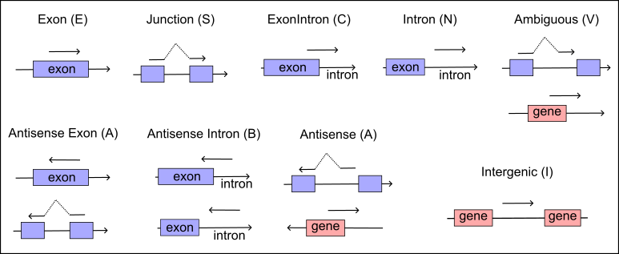

PISA User’s Guide
Synopsis
PISA [tool] [options] [input-file]Install
PISA source code can be downloaded at https://github.com/shiquan/PISA/releases, or the development version from https://github.com/shiquan/PISA/. To compile PISA from sources run make in the source directory.
$ git clone https://github.com/shiquan/PISA
$ cd PISA
$ makeGet Started
The code snippet below demonstrates how to use the PISA tools to process test data and generate various feature counts. You can find the test data in the PISA/demo directory. This example provides a practical approach to familiarize yourself with the functionality of PISA and to validate its operations with provided sample data.
$ cd demo
$ ls
aln.sam.gz barcodes.txt demo_1.fq.gz demo_2.fq.gz demo.gtf.gz peaks.bed README.md var.vcf.gz
$ zcat demo_1.fq.gz|head -n 4
@A00984:220:HNJ7KDRXX:1:1118:2510:4586
AAGCATCCACACAGAGCACCCCGTTCTT
+
FFFFFFFFFFFFFFFFFFFFFFFFFFFF
$ zcat demo_2.fq.gz|head -n 4
@A00984:220:HNJ7KDRXX:1:1118:2510:4586
GCAGTGGTATCAACGCAGAGTACATGGGGAGCCTCATTGCCCAGCGGACCCCAGCCTCTGCCAGGTTCGGTCCGCCATCCTCGTCCCGTCC
+
FFFFF:FFFFFF:FFFFFFFFFF,FFFFFFFFF:FFFFFFFFF,FFFF:FFF,FFFFF:FFF:FFFFFFFFFFFFFFFFFFFF:FFFFFFF
# Convert raw FASTQ to FASTQ+ format
$ PISA parse -rule 'CR,R1:1-16,barcodes.txt,CB,1;UR,R1:17-28;R1,R2' demo_1.fq.gz demo_2.fq.gz -1 demo.fq
Number of Fragments,825
Fragments pass QC,825
Fragments with Exactly Matched Barcodes,805
Fragments with Failed Barcodes,0
[2022-04-22 12:21:35] Real time: 0.003 sec; CPU: 0.009 sec; Peak RSS: 0.010 GB.
$ head -n 4 demo.fq
@A00984:220:HNJ7KDRXX:1:1118:2510:4586|||CR:Z:AAGCATCCACACAGAG|||CB:Z:AAGCATCCACACAGAG|||UR:Z:CACCCCGTTCTT
GCAGTGGTATCAACGCAGAGTACATGGGGAGCCTCATTGCCCAGCGGACCCCAGCCTCTGCCAGGTTCGGTCCGCCATCCTCGTCCCGTCC
+
FFFFF:FFFFFF:FFFFFFFFFF,FFFFFFFFF:FFFFFFFFF,FFFF:FFF,FFFFF:FFF:FFFFFFFFFFFFFFFFFFFF:FFFFFFF
# Alignment results of FASTQ+
$ samtools view aln.sam.gz|head -n 1
A00984:220:HNJ7KDRXX:1:1118:2510:4586|||CR:Z:AAGCATCCACACAGAG|||CB:Z:AAGCATCCACACAGAG|||UR:Z:CACCCCGTTCTT 0 chr11 35139165 255 26S65M * 0 0 GCAGTGGTATCAACGCAGAGTACATGGGGAGCCTCATTGCCCAGCGGACCCCAGCCTCTGCCAGGTTCGGTCCGCCATCCTCGTCCCGTCC FFFFF:FFFFFF:FFFFFFFFFF,FFFFFFFFF:FFFFFFFFF,FFFF:FFF,FFFFF:FFF:FFFFFFFFFFFFFFFFFFFF:FFFFFFF NH:i:1 HI:i:1 AS:i:61 nM:i:1
# Convert format alignment records from SAM to BAM
$ PISA sam2bam aln.sam.gz -o aln.bam
Raw reads,825
Mapped reads,820 (99.39%)
Plus strand,820
Minus strand,0
Mitochondria ratio,0.00%
[2022-04-22 12:26:31] Real time: 0.005 sec; CPU: 0.009 sec; Peak RSS: 0.010 GB.
$ samtools view aln.bam|head -n 1
A00984:220:HNJ7KDRXX:1:1118:2510:4586 0 chr11 35139165 255 26S65M * 0 0 GCAGTGGTATCAACGCAGAGTACATGGGGAGCCTCATTGCCCAGCGGACCCCAGCCTCTGCCAGGTTCGGTCCGCCATCCTCGTCCCGTCC FFFFF:FFFFFF:FFFFFFFFFF,FFFFFFFFF:FFFFFFFFF,FFFF:FFF,FFFFF:FFF:FFFFFFFFFFFFFFFFFFFF:FFFFFFF NH:i:1 HI:i:1 AS:i:61 nM:i:1 CR:Z:AAGCATCCACACAGAG CB:Z:AAGCATCCACACAGAG UR:Z:CACCCCGTTCTT
# Annotate gene names for BAM
$ PISA anno -gtf ./demo.gtf.gz aln.bam -o anno_gtf.bam
[2022-04-22 12:28:38] GTF loading..
[2022-04-22 12:28:38] Load 2 genes.
[2022-04-22 12:28:38] Load time : 0.003 sec
Reads Mapped to Genome (Map Quality >= 0),99.4%
Reads Mapped to Exonic Regions,99.3%
Reads Mapped to Intronic Regions,0.0%
Reads Mapped to both Exonic and Intronic Regions,0.7%
Reads Mapped Antisense to Gene,0.0%
Reads Mapped to Intergenic Regions,0.0%
Reads Mapped to Gene but Failed to Interpret Type,0.0%
[2022-04-22 12:28:38] Real time: 0.026 sec; CPU: 0.086 sec; Speed : 9528 records/sec; Peak RSS: 0.034 GB.
# Correct UMIs amongst other UMIs from the same cell and mapped to the same gene, and create new tag UB for corrected UMIs
$ PISA corr -tag UR -new-tag UB -tags-block CB,GN anno_gtf.bam -o corr.bam
[2022-04-22 12:36:21] Building index ..
[2022-04-22 12:36:21] Build time : 0.002 sec
[2022-04-22 12:36:21] Real time: 0.077 sec; CPU: 0.085 sec
$ samtools view corr.bam|head -n 1
A00984:220:HNJ7KDRXX:1:1118:2510:4586 0 chr11 35139165 255 26S65M * 0 0 GCAGTGGTATCAACGCAGAGTACATGGGGAGCCTCATTGCCCAGCGGACCCCAGCCTCTGCCAGGTTCGGTCCGCCATCCTCGTCCCGTCC FFFFF:FFFFFF:FFFFFFFFFF,FFFFFFFFF:FFFFFFFFF,FFFF:FFF,FFFFF:FFF:FFFFFFFFFFFFFFFFFFFF:FFFFFFF NH:i:1 HI:i:1 AS:i:61 nM:i:1 CR:Z:AAGCATCCACACAGAG CB:Z:AAGCATCCACACAGAG UR:Z:CACCCCGTTCTT RE:A:E GX:Z:ENSG00000026508.18 GN:Z:CD44 TX:Z:ENST00000263398.10,ENST00000428726.7,ENST00000526025.2 UB:Z:CACCCCGTTCTT
# Count gene X cell features
$ mkdir exp
$ PISA count -cb CB -anno-tag GN -outdir exp -umi UB corr.bam
[2022-04-22 12:38:44] Real time: 0.033 sec; CPU: 0.013 sec; Peak RSS: 0.010 GB.
# Gene expression matrix generated in the Market Exchange format
$ ls exp/
barcodes.tsv.gz features.tsv.gz matrix.mtx.gz
# Not just gene features, we can also annotate variants and functional regions to reads
$ PISA anno -bed peaks.bed -tag PK -vcf var.vcf.gz -vtag VR corr.bam -o anno_vcf_bed.bam
Reads Mapped to Genome (Map Quality >= 0),99.4%
Reads Mapped to BED regions / Peaks,0.0%
[2022-04-22 12:43:01] Real time: 0.027 sec; CPU: 0.090 sec; Speed : 9085 records/sec; Peak RSS: 0.034 GB.
$ samtools view anno_vcf_bed.bam|grep "VR:Z"|grep "PK:Z"|head -n 1
A00984:220:HNJ7KDRXX:1:2266:27597:30843 0 chr11 35229688 255 91M * 0 0 CCCAGGGTTAATAGGGCCTGGTCCCTGGGAGGAAATTTGAATGGGTCCATTTTGCCCTTCCATAGCCTAATCCCGGGGCATTGTTTTCCAC
FFFF,FFFFFFFFFF,FFFFFFF:,:FFFFFF,FF:FFFFFFFFFFF:,,:F:F:F,F:F:F,FFFF,F:FFFF,FF,FF:FFFFFFF:F: NH:i:1 HI:i:1 AS:i:85 nM:i:2 CR:Z:ATTGTTCCAAGTCCCG CB:Z:ATTGTTCCAAGTCCCG UR:Z:TCTTTAAGTCAG RE:A:E GX:Z:ENSG00000026508.18 GN:Z:CD44 TX:Z:ENST00000263398.10,ENST00000428726.7,ENST00000425428.6,ENST00000433892.6,ENST00000525469.1 UB:Z:TCTTTAAGTCAG PK:Z:demo_peak_14a;demo_peak_14b VR:Z:chr11:35229771C>T
# Summarize the reads, UMIs, genes, peaks, and variants per cell
$ PISA attrcnt -cb CB -tags UB,GN,PK,VR anno_vcf_bed.bam -dedup |head -n 5
BARCODE Raw UB GN PK VR
AAGCATCCACACAGAG 503 132 1 15 1
ATTGTTCCAAGTCCCG 533 124 1 13 1
AAGCATCCACACNGAG 3 1 1 1 0
AAGCNTCCACACAGAG 3 1 1 1 0
# Deduplicate BAM file for each cell
$ PISA rmdup -tags CB corr.bam -o rmdup.bam -nw
[2022-04-22 12:59:39] Deduplicating chr11
[2022-04-22 12:59:39] All reads,820
[2022-04-22 12:59:39] Duplicate reads,125
[2022-04-22 12:59:39] Duplicate ratio,0.1524
[2022-04-22 12:59:39] Real time: 0.008 sec; CPU: 0.015 sec; Peak RSS: 0.010 GB.
# Deduplicate BAM file for each molecular
$ PISA rmdup -tags CB,UR corr.bam -o rmdup1.bam -nw
[2022-04-22 13:00:35] Deduplicating chr11
[2022-04-22 13:00:35] All reads,820
[2022-04-22 13:00:35] Duplicate reads,0
[2022-04-22 13:00:35] Duplicate ratio,0.0000
[2022-04-22 13:00:35] Real time: 0.009 sec; CPU: 0.015 sec; Peak RSS: 0.011 GB.
# Select all reads annotated to gene CD44
# Generate a gene candidate list
$ echo "CD44" > gene.txt
$ PISA pick -tags GN -list gene.txt anno_vcf_bed.bam -o picked.bam
[2022-04-22 13:03:01] Real time: 0.009 sec; CPU: 0.016 sec
# Select reads with more features
$ awk '{printf("%s\tCD44\n", $1)}' barcodes.txt > candidates.txt
$ cat candidates.txt
AAGCATCCACACAGAG CD44
ATTGTTCCAAGTCCCG CD44
GCACATAGTCAGTTTG CD44
$ PISA pick -tags CB,GN -list candidates.txt anno_vcf_bed.bam -o picked.bam
[2022-04-22 13:09:28] Real time: 0.007 sec; CPU: 0.013 sec
# Convert BAM to FASTQ+
$ PISA bam2fq -tags CB,GN picked.bam -o pick.fq
$ head -n 4 pick.fq
@A00984:220:HNJ7KDRXX:1:1118:2510:4586|||CB:Z:AAGCATCCACACAGAG|||GN:Z:CD44
GCAGTGGTATCAACGCAGAGTACATGGGGAGCCTCATTGCCCAGCGGACCCCAGCCTCTGCCAGGTTCGGTCCGCCATCCTCGTCCCGTCC
+
FFFFF:FFFFFF:FFFFFFFFFF,FFFFFFFFF:FFFFFFFFF,FFFF:FFF,FFFFF:FFF:FFFFFFFFFFFFFFFFFFFF:FFFFFFF
# Sort FASTQ+ reads by CB and GN
$ PISA fsort -tags CB,GN pick.fq -o fsort.fq.gz
[2022-04-22 13:22:50] Write 795 records to fsort.fq.gz.0000.bgz.
[2022-04-22 13:22:50] Unlink fsort.fq.gz.0000.bgz
[2022-04-22 13:22:50] Create fsort.fq.gz from 1 files.
[2022-04-22 13:22:50] Real time: 0.021 sec; CPU: 0.020 sec
$ zcat fsort.fq.gz|head -n 8
@A00984:220:HNJ7KDRXX:1:1118:2510:4586|||CB:Z:AAGCATCCACACAGAG|||GN:Z:CD44
GCAGTGGTATCAACGCAGAGTACATGGGGAGCCTCATTGCCCAGCGGACCCCAGCCTCTGCCAGGTTCGGTCCGCCATCCTCGTCCCGTCC
+
FFFFF:FFFFFF:FFFFFFFFFF,FFFFFFFFF:FFFFFFFFF,FFFF:FFF,FFFFF:FFF:FFFFFFFFFFFFFFFFFFFF:FFFFFFF
@A00984:220:HNJ7KDRXX:1:2143:21640:21496|||CB:Z:AAGCATCCACACAGAG|||GN:Z:CD44
CCTGCCCCGCGCCCAGAGATCCTCCAGCTCCTTTCGCCCGCGCCCTACGTTCGCTCCGGACACCATGGACAAGTATTGGTGGAACACAGCC
+
,,FFFFFFFF,F,,:F,F,F:FFF,FFFFFF,F::F,FF,F:FF:,,FF:FFF,:FFFF:FFF,::FFFF,F:F,FFFF,,F,FFF,F,::
# Assembly reads mapped to CD44 of the same cell into contigs
# This step requires Trinity software and seqtk already installed in your environment
$ PISA stream -tags CB,GN -script 'Trinity --seqType fq --SS_lib_type F --single ${FQ} --max_memory 1G 2>/dev/null 1>/dev/null; seqtk rename trinity_out_dir.Trinity.fasta ${UBI}_ 2>/dev/null' -t 10 -fa -nw ./fsort.fq.gz -o assem.fa
[2022-04-22 13:24:21] Real time: 5.607 sec; CPU: 0.010 sec; Peak RSS: 0.010 GB.
$ seqtk seq assem.fa -l 100 |head
>Z_AAGCATCCACACAGAG_Z_CD44_1|||CB:Z:AAGCATCCACACAGAG|||GN:Z:CD44 len=439 path=[0:0-438]
GAAATTAGGGCCCAATTAATAATCAGCAAGAATTTGATCGTTCCAGTTCCCACTTGGAGGCCTTTCATCCCTCGGGTGTGCTATGGATGGCTTCTAACAA
AAACTACACATATGTATTCCTGATCGCCAACCTTTCCCCCACCAGCTAAGGACATTTCCCAGGGTTAATAGGGCCTGGTCCCTGGGAGGAAATTTGAATG
GGTCCATTTTGCCCTTCCATAGCCTAATCCCTGGGCATTGTTTTCCACTGAGGTTGGGGGTTGGGGTGTACTAGTTACACATCTTCAACAGACCCCCTCT
AGAAATTTTTCAGATGCTTCTGGGAGACACCCAAAGGGTGAAGCTATTTATCTGTAGTAAACTATTTATCTGTGTTTTTGAAATATTAAACCCTGGATCA
GTCCTTTGATCAGTATAATTTTTTAAAGTTACTTTGTCA
>Z_AAGCATCCACACAGAG_Z_CD44_2|||CB:Z:AAGCATCCACACAGAG|||GN:Z:CD44 len=384 path=[0:0-383]
CCTGGTAGAATTGGCTTTTCTAGCAGAACCTTTCCAAAAGTTTTATATTGAGATTCATAACAACACCAAGAATTGATTTTGTAGCCAACATTCATTCAAT
ACTGTTATATCAGAGGAGTAGGAGAGAGGAAACATTTGACTTATCTGGAAAAGCAAAATGTACTTAAGAATAAGAATAACATGGTCCATTCACCTTTATG
TTATAGATATGTCTTTGTGTAAATCATTTGTTTTGAGTTTTCAAAGAATAGCCCATTGTTCATTCTTGTGCTGTACAATGACCACTGTTATTGTTACTTT
# Align assembled reads to reference and convert to BAM file
# Here I use minimap2 for simplicity
$ minimap2 -x splice -a ~/Documents/datasets/GRCh38/fasta/genome.fasta assem.fa 1> asm_aln.sam
[M::mm_idx_gen::50.495*1.81] collected minimizers
[M::mm_idx_gen::71.980*2.16] sorted minimizers
[M::main::71.980*2.16] loaded/built the index for 194 target sequence(s)
[M::mm_mapopt_update::75.057*2.11] mid_occ = 767
[M::mm_idx_stat] kmer size: 15; skip: 5; is_hpc: 0; #seq: 194
[M::mm_idx_stat::77.004*2.09] distinct minimizers: 167225302 (35.42% are singletons); average occurrences: 6.036; average spacing: 3.071; total length: 3099750718
[M::worker_pipeline::77.010*2.09] mapped 13 sequences
[M::main] Version: 2.21-r1071
[M::main] CMD: minimap2 -x splice -a /home/shiquan/Documents/datasets/GRCh38/fasta/genome.fasta assem.fa
[M::main] Real time: 77.358 sec; CPU: 161.000 sec; Peak RSS: 18.519 GB
$ PISA sam2bam asm_aln.sam -o asm_aln.bam
Raw reads,13
Mapped reads,13 (100.00%)
Plus strand,13
Minus strand,0
Mitochondria ratio,0.00%
[2022-04-22 13:30:20] Real time: 0.001 sec; CPU: 0.006 sec; Peak RSS: 0.010 GB.
$ samtools view asm_aln.bam|head -n 1
Z_AAGCATCCACACAGAG_Z_CD44_1 0 chr11 35229531 60 439M * 0 0 GAAATTAGGGCCCAATTAATAATCAGCAAGAATTTGATCGTTCCAGTTCCCACTTGGAGGCCTTTCATCCCTCGGGTGTGCTATGGATGGCTTCTAACAA
AAACTACACATATGTATTCCTGATCGCCAACCTTTCCCCCACCAGCTAAGGACATTTCCCAGGGTTAATAGGGCCTGGTCCCTGGGAGGAAATTTGAATG
GGTCCATTTTGCCCTTCCATAGCCTAATCCCTGGGCATTGTTTTCCACTGAGGTTGGGGGTTGGGGTGTACTAGTTACACATCTTCAACAGACCCCCTCT
AGAAATTTTTCAGATGCTTCTGGGAGACACCCAAAGGGTGAAGCTATTTATCTGTAGTAAACTATTTATCTGTGTTTTTGAAATATTAAACCCTGGATCA
GTCCTTTGATCAGTATAATTTTTTAAAGTTACTTTGTCA * NM:i:1 ms:i:436 AS:i:436 nn:i:0 tp:A:P cm:i:137 s1:i:430 s2:i:0 de:f:0.0023 rl:i:0 CB:Z:AAGCATCCACACAGAG GN:Z:CD44List of commands
| Tool | Description |
|---|---|
| The following tools are used to process FASTQ/FASTQ+ files. | |
| parse | Parse barcodes from FASTQ reads to FASTQ+. |
| fsort | Sort FASTQ+ records by barcodes. |
| stream | Perform user-defined process for each read block. |
| addtags | Add tag string to FASTQ reads. |
| The following tools are used to process BAM files. | |
| sam2bam | Parse FASTQ+ read name and convert SAM to BAM. |
| rmdup | Remove PCR duplicates per molecular. |
| pick | Pick alignments with tags. |
| anno | Annotate functional regions or gene names. |
| corr | Correct error prone UMIs. 1 mismatch considered. |
| attrcnt | Count raw reads and tag values per cell. |
| extract | Extract tag value from BAM. |
| count | Count feature X cell matrix from BAMs. |
| bam2fq | Convert BAM to FASTQ+ file with selected tags. |
| bam2frag | Generate fragment file. |
| depth | Coverage depth/UMI for target regions. |
| addtags | Add tag string to BAM alignments. |
| callept | Call expressed peak tags (EPTs) for RNA library. |
| The following tool used to process fragment file. | |
| count2 | Count peak X cell matrix from fragment file. |
| The following tools used to process BED files. | |
| mergebed | Merge BED files. |
| annobed | Annotate BED files with genes and functional elements. |
| flatten | Flatten overlapped regions to nonoverlaps. |
| The following tools used to process GTF files. | |
| gtffmt | Format and reorder GTF file. |
| gtf2bed | Convert GTF to BED. |
Commands and options
Common options for all tools
- -h
- Help information
- -o FILE
- Output file.
- -tags tag(s)
- Barcode tags to group reads, usually be cell barcode tag.
- -umi tag
- UMI tag.
- -t/-@ number
- Multithreads to process data.
- -report FILE.csv
- Summary report in csv format.
parse
The parse tool is specifically designed to convert FASTQ files into the extended FASTQ+ format. It utilizes the -rule option to define the library structure, accommodating various sequencing setups. For ease of use, this tool has included predefined common library structures in the release; these can be applied using the -x option. This tool is optimized for speed and supports the correction of barcodes that have up to one mismatch.
# Parse cell barcode and UMI string from raw FASTQ.
$ PISA parse -rule CB,R1:1-10,whitelist.txt,CB,1;R1,R1:11-60;R2,R2 -report fastq.csv lane1_1.fq.gz,lane02_1.fq.gz lane1_2.fq.gz,lane2_2.fq.gz
Options :
-1 [fastq] Read 1 output.
-2 [fastq] Read 2 output.
-rule [STRING] Read structure in line. See Notice.
-p Read 1 and read 2 interleaved in the input file.
-q [INT] Drop reads if average sequencing quality below this value.
-dropN Drop reads if N base in sequence or barcode.
-report [csv] Summary report.
-t [INT] Threads. [4]
-order Keep input order.
-x Predefined code for specific library.
* C4 Library structure for DNBelab C4 RNA kit v1.
Notice :
* -rule accept tag rule STRING to parse input fastq following format "TAG,location,whitelist,corrected TAG,allow mismatch".
For each tag rule, location part should be format like R[12]:start-end. Both start and end location start from 1.
TAG and locaion parts are mandatory, and whitelist, corrected TAG and mismatch are optional.
Futhermore, multiply tags seperated by ';'. In location part, R1 stands for raw read 1, R2 stands for raw read 2.
In tag part, R1 stands for output read 1 while R2 stands for output read 2. Here are some examples.
$ PISA parse -rule 'CR,R1:1-18,barcodes.txt,CB,1;UR,R1:19-30;R1,R2:1-100' -1 read_1.fq raw_read_1.fq raw_read_2.fq
# CR,R1:1-18,barcodes.txt,CB,1 - CR tag start from 1 to 18 in read 1, and barcodes.txt are barcode whitelist,
# each barcode per line. Cell barcode will be corrected while hamming distance <= 1.
# Corrected cell barcode tag is CB.
# UR,R1:19-30 - UR tag start from 19-30 in read 1.
# R1,R2:1-100 - Sequence from 1 to 100 in read 2 output to read 1 file.
$ PISA parse -rule 'CR,R1:1-10,bc1.txt,CB,1;CR,R1:11-20,bc2.txt,CB,1;R1,R2:1-100' -1 read_1.fq raw_read_1.fq raw_read_2.fq
# CR,R1:1-10,bc1.txt,CB,1;CR,R1:11-20,bc2.txt,CB,1 - This cell barcode consist of two segments, first segment start
# from 1 to 10 in read 1, and whitelist is bc1.txt, and second segment start from 11 to 20, and whitelist is bc2.txt.
# These two segments will be combined after correction, because the corrected tag are the same.Option -report can specify a quality control report in CSV format. Here is the explanation of each term in this file.
| Terms | Description |
|---|---|
| Number of Fragments | The number of records in the FASTQ(s). For paired reads, each pair only count once. |
| Fragments pass QC | Reads or paired reads pass QC. |
| Fragments with Exactly Matched Barcodes | Barcodes exactly matched with any barcode in the candidate list. |
| Fragments with Failed Barcodes | No barcode found in the candidate list with similar search. |
fsort
The fsort tool is engineered to order FASTQ+ records based on specified tags, which can be defined using the -tags option. This tool efficiently handles file sorting: for files smaller than 1 gigabyte, it performs the sort directly. However, for larger FASTQ files, where caching the entire file in memory is impractical, fsort employs a different strategy. It splits the large file into smaller segments, sorts each segment individually, and then merges the sorted segments. This method ensures efficient handling of large datasets while maintaining the integrity and order of the FASTQ+ records.
# Sort reads by tags.
$ PISA fsort -tags CB,UR -list cell_barcodes_top10K.txt -@ 5 -o sorted.fq.gz in.fq
Options:
-tags [TAGS] Tags, such as CB,UR. Order of these tags is sensitive.
-@ [INT] Threads to compress file.
-o [fq.gz] bgzipped output fastq file.
-m [mem] Memory per thread. [1G]
-p Input fastq is smart pairing.
-T [prefix] Write temporary files to PREFIX.nnnn.tmpstream
The stream tool is designed as a framework to process FASTQ+ files, where each FASTQ+ block—defined by having identical tags and grouped together in the file—is handled individually. The -script option allows users to specify a custom bash script that processes each block. This user-defined script reads a ‘small’ FASTQ+ file, generating FASTQ or FASTA output that is then sent to stdout. The stream tool captures this output via a pipe and updates the tags to ensure that each block of reads retains its original tags. Finally, it consolidates all outputs into a single file. In essence, this tool efficiently divides and processes each FASTQ+ block through a user-defined method, then seamlessly merges the results.
# Perform user-defined script for each FASTQ+ block.
$ PISA stream -script run.sh reads.fq.gz
Options :
-tags [TAGS] Tags to define read blocks.
-script [FILE] User defined bash script, process $FQ and generate results to stdout.
-min [INT] Mininal reads per block to process. [2]
-keep Output unprocessed FASTQ+ records.
-fa Stream FASTQ output instead of FASTQ.
-tmpdir
-t Threads.
-o [FILE] Path to output file.
-nw Disable warning messages.Write a script for PISA stream
The PISA stream tool generates a temporary file named _block.fq for each block of reads, storing this file in a designated temporary directory. The path to this file is set in the environment variable ${FQ} for accessibility by subprocesses. Additionally, to ensure the uniqueness of each block, an alias named the ‘unique block index’ is exported to the environment as ${UBI}.
The following example script demonstrates how to convert FASTQ+ to FASTA and rename the sequence ID. It is crucial for users to ensure that the script’s final output (either FASTQ+ or FASTA) is directed to stdout. All other script steps should avoid producing output to stdout or stderr, except for the last step. This precaution is necessary because PISA captures the script’s output through a pipe, and any unintended characters could disrupt the data format. Scripts can be written in a bash file or specified inline within the command.
$ cat run.sh
seqtk rename ${FQ} > test.fa; seqtk rename test.fa ${UBI}sam2bam
After alignment, the sequence ID from the FASTQ+ records is retained in the RNAME field of the SAM file. Given that the RNAME field is limited to 254 characters, we also restrict the sequence ID and any optional tag fields in FASTQ+ to this length to ensure compatibility. The sam2bam tool processes these details by parsing the tags from the RNAME and appending them to the end of the SAM optional fields.
# Parse FASTQ+ read name and convert SAM to BAM.
$ PISA sam2bam -report alignment.csv -@ 5 -adjust-mapq -gtf genes.gtf -o aln.bam in.sam[.gz]
Options :
-o [BAM] Output file [stdout].
-t [INT] Work threads.
-mito [string] Mitochondria name. Used to stat ratio of mitochondria reads.
-maln [BAM] Export mitochondria reads into this file instead of standard output file.
-@ [INT] Threads to compress bam file.
-report [csv] Alignment report.
Note :
* Reads map to multiple loci usually be marked as low quality and filtered at downstream analysis.
But for RNAseq library, if reads map to an exonic locus but also align to 1 or more non-exonic loci,
the exonic locus can be prioritized as primary alignments, and mapping quality adjusts to 255. Tag
MM:i:1 will also be added for this record. Following options used to adjust mapping quality.
* Input SAM need be sorted by read name, and aligner should output all hits of a read in this SAM.
-adjust-mapq Enable adjusts mapping quality score.
-gtf [GTF] GTF annotation file. This file is required to check the exonic regions.
-qual [255] Updated quality score.Option -t is to set the threads to parse the SAM records. The -@ option is to set the threads to compress alignments in BGZF format. The default compress level of BGZF is 6 in the htslib, but here PISA has reset this value to 2 to decrease the CPU times. It’s not a good design to have both -t and -@, but will require a lot work to redesign the multithreads strategy, I have put this work in my todo list.
Option -report can specify a quality control report in CSV format. Here is the explanation of each term in this file.
| Terms | Description |
|---|---|
| Raw reads | Raw reads in the BAM files, secondary alignment will be skipped. |
| Mapped reads | Reads mapped to reference, and the ratio of raw reads. |
| Plus strand | Reads mapped to forward strand of reference. |
| Minus strand | Reads mapped to backward strand of reference. |
| Mitochondria ratio | Ratio of reads mapped to chromosome mitochondria. The default mito name is “chrM”, user should change it by -mito option if reference is different. Otherwise this value will always be 0. |
MapQ adjust method
For RNA libraries, if a read from cDNA maps to an exonic locus but also maps to one or more non-exonic regions, the exonic locus can be prioritized as primary alignments, and mapping quality adjusts to 255. In the below records below, read DP8400008965TLL1C001R0102043364 mapped to three loci, and the aligner random pick one as the primary alignment and others as secondary. Each of these alignments has low mapping quality (MAPQ == 2, is usually filtered at downstream analysis). Our adjustment method will check if only one of these alignments overlaps with exonic regions. In our example, the last alignment overlapped with gene EEF1A1, and the other two hit intergenic regions. After adjustment, the last record has been flagged as a primary hit, and the mapping quality adjusted to 255, and other alignments of the same read are updated as secondary, MAPQ adjust to 0. MM:i:1 tag also is added to the primary record after adjustment. Option -adjust-mapq is reimplemented to mirror the 10X CellRanger’s MAPQ adjustment method (https://support.10xgenomics.com/single-cell-gene-expression/software/pipelines/latest/algorithms/overview#alignment).
# Output by aligner:
DP8400008965TLL1C001R0102043364 0 9 133020979 2 100M * 0 0 GTTAATGATAACAATGCATCGTAAAACCTTCAGAAGGAAAGGAGAATGTTTTGTGGACCACTTTGGTTTTCTTGTTTGCGTGTGGCAGTTTTAAGTTTTT ...
DP8400008965TLL1C001R0102043364 272 7 22510408 2 100M * 0 0 AAAAACTTAAAACTGCCACACGCAAACAAGAAAACCAAAGTGGTCCACAAAACATTCTCCTTTCCTTCTGAAGGTTTTACGATGCATTGTTATCATTAAC ...
DP8400008965TLL1C001R0102043364 272 6 73517606 2 100M * 0 0 AAAAACTTAAAACTGCCACACGCAAACAAGAAAACCAAAGTGGTCCACAAAACATTCTCCTTTCCTTCTGAAGGTTTTACGATGCATTGTTATCATTAAC ...
# After adjustment (Seq and Qual in secondary alignments masked as *):
DP8400008965TLL1C001R0102043364 256 9 133020979 0 100M * 0 0 * ...
DP8400008965TLL1C001R0102043364 272 7 22510408 0 100M * 0 0 * ...
DP8400008965TLL1C001R0102043364 16 6 73517606 255 100M * 0 0 AAAAACTTAAAACTGCCACACGCAAACAAGAAAACCAAAGTGGTCCACAAAACATTCTCCTTTCCTTCTGAAGGTTTTACGATGCATTGTTATCATTAAC ... MM:i:1An example list here to show how to enable mapq adjuestment.
PISA sam2bam -report alignment.csv -o out.bam -adjust-mapq -gtf hg38.gtf in.samrmdup
To effectively manage PCR duplication in single-cell experiments, it is essential to consider both cell and molecular barcodes. During the feature counting stage facilitated by PISA count, deduplication is efficiently handled by relying solely on unique UMIs. This reliance makes traditional PCR deduplication unnecessary for libraries that use UMIs. Nonetheless, producing a deduplicated BAM file remains beneficial for other analytical processes, such as variant calling, or simply to reduce file size.
The rmdup tool is specifically designed to remove duplicate reads that share identical barcodes, such as UMIs and cell barcodes. This selective deduplication approach ensures that only truly redundant data is removed, thus preserving the integrity and completeness of the dataset for comprehensive downstream analyses.
# Deduplicate PCR reads with same barcodes.
$ PISA rmdup -tags CB,UR -o rmdup.bam in.bam
Options :
-tags [TAGS] Barcode tags to group reads.
-@ [INT] Threads to unpack BAM.
-o [BAM] Output bam.
-q [INT] Map Quality Score cutoff.
-k Keep duplicates, make flag instead of remove them.
-nw Disable warnings.In this version, PISA rmdup only supports single-end reads. For paired-end reads, such as scATAC data, PCR deduplication can be performed by the PISA bam2frag tool.
pick
The PISA pick tool is designed to select alignments with predefined tags and candidate values.
$ PISA pick -tags CB,GN -list cell_barcodes.txt in.bam
Options :
-tags [TAGS] Barcode tags.
-list [FILE] Barcode white list, tag values in related column will be apply.
-o [BAM] Output file.
-q [INT] Map Quality Score cutoff.
-@ [INT] Threads to unpack BAM.Depending on the number of tags specified by the user, the candidate list for tags can consist of either a single column or multiple columns. If multiple tags are specified but only one column is present in the list, the program will primarily compare the value of the first tag in the alignments with the list.
anno
Connecting alignment results with genomic features is essential in single-cell data analysis. PISA categorizes features into three main types: gene annotation, functional regions, and genetic or sequence variations. For gene annotation, the PISA anno tool efficiently organizes all exons, transcripts, and genes from a GTF database into a sorted hierarchical tree structure.
Based on their alignment status, reads are then classified into one of nine distinct types, see illustrate below Figure 1. This detailed categorization helps in accurately assessing the transcriptional landscape and understanding the complex genomic architecture within single-cell datasets.

# annotate strand-specific reads
$ PISA anno -gtf genes.gtf -o anno.bam sorted.bam
# annotate non-strand-specific reads, for Smartseq or bulk RNAseq
$ PISA anno -ignore-strand -gtf genes.gtf -o anno.bam sorted.bam
# also label gene name for intronic reads, i.e. RNA velocity analysis
$ PISA anno -intron -gtf genes.gtf -o anno.bam sorted.bam
# annotate expressed peaks and genetic variants (both reference allele and alternative allele)
$ PISA anno -bed peak.bed -vcf in.vcf.gz -vcf-ss -ref-alt -o anno.bam in.bamBesides these annotation methods, PISA anno also supports a -chr-species method. This method requires a binding list for chromosome and related label relationships. The software will check the chromosome and add the related tag for each chromosome. This method, combined with PISA attrcnt can help to summarize the mixed two cell lines from different species.
# A binding list is tab-separated two columns txt file.
$ cat binding_list.txt
GRCh38_chr1 Human
GRCh38_chr21 Human
mm10_chr21 Mouse
$ PISA anno -chr-species binding.txt -btag SP -o anno_species.bam sorted.bamThe full options and descriptions list below.
-o [BAM] Output bam file.
-report [csv] Summary report.
-@ [INT] Threads to compress bam file.
-q [0] Map Quality Score cutoff. MapQ smaller than this value will not be annotated.
-t [INT] Threads to annotate.
-chunk [INT] Chunk size per thread.
-anno-only Export annotated reads only.
-sam Input is SAM file, parse tags from read name.
-rev Annotation in reverse strand; Some probe ligation library for FFPE samples create reverse fragments.
Options for BED file :
-bed [BED] Function regions. Three or four columns bed file. Col 4 could be empty or names of this region.
-tag [TAG] Attribute tag name. Set with -bed. Default is PK.
Options for mixed samples.
-chr-species [FILE] Chromosome name and related species binding list.
-btag [TAG] Species tag name. Set with -chr-species. Default is SP.
Options for GTF file :
-gtf [GTF] GTF annotation file. gene_id,transcript_id is required for each record.
-tags [TAGs] Attribute names, more details see `Notice` below. [TX,GN,GX,RE,EX,JC]
-is Ignore strand of transcript in GTF. Reads mapped to antisense transcripts will also be annotated.
-splice Reads covered exon-intron edge (ExonIntron type) will also be annotated with all tags.
-intron/-velo Reads covered intron regions will also be annotated with all tags.
-exon Generate exon level and junction annotation. Put exon name (chr:start-end/[[+-]/Gene) in EX tag.\
Also generate junction name (chr:exon1_end-exon2_start/[+-]/Gene) in JC tag.
-flatten Split overlapped exons into nonoverlapped bins.
-psi Annotate exclude reads tag (ER) for each exon.
-tss Annotate reads start from TSS, designed for capped library. **experiment**
-ctag [TAG] Tag name for TSS annotation. Need set with -tss.
Options for VCF file :
-vcf [VCF/BCF] Varaints file in vcf or bcf format. In default, only annotate alternative alleles.
-vtag [TAG] Tag name for variants. Set with -vcf. Default is VR.
-ref-alt Annotate ref allele.
-vcf-ss Annotate variants in strand sensitive way.
Notice :
* If input is SAM format, will try to parse the tags in the read name.
* For GTF mode, this program will set tags in default, you could also reset them by -tags.
TX : Transcript id.
GN : Gene name.
GX : Gene ID.
RE : Region type, E (exon), N (intron), C (exon and intron), S (junction reads cover isoforms properly), V (ambiguous reads),
I (intergenic), A (antisense or antisense exon), B (antisense intron), X (one or more exons are excluded in transcrpit)
* The following tags set with -exon.
EX : Exon name tag.
JC : Isoform junction name.
FL : Flatten exon name. Only generate it with -flatten.
* The following tags set with -psi.
ER : Excluded exons.
* PSI = EX/(EX+ER); EX is the exon tag, which indicate include reads in exon.corr
The diversity of UMIs of each gene in one cell is used to evaluate the gene expression level, but the error of UMI comes from sequencing or PCR may introduce bias. PISA corr is designed to correct the UMI or barcode sequence based on Hamming distance. In default, two groups of UMI from the same gene of one cell with Hamming distance equal to 1, will be considered to originate from the same transcript. The group with high frequency will be selected as a real one, and another one will be corrected to the high one.
Because PISA corr does not require a sorted BAM, this tool will first build a correction list by caching all the raw UMIs and barcodes and then correct them in memory. After these steps, this tool will reread the file and update these records by order. This design can avoid potential bias for the same gene from different chromosomes (i.e., the HLA genes in alternative locus). However, this design also required a lot of memory for a big BAM.
CellRanger also introduces an algorithm to correct reads with the same UMI of one cell but mapping to more than one gene (https://support.10xgenomics.com/single-cell-gene-expression/software/pipelines/latest/algorithms/overview). PISA implements this method but does not enable it in default. The -cr option can be used by users to enable this function. The reason for not enable it by default is PISA corr not only is used to correct UMIs, but also can be used to correct any other types of barcodes. The following example shows how to use PISA corr to correct cell barcodes for reads in the same gene.
// Reads with same gene tag (GN) and UMI (UB) will be grouped and calculate the Hamming distance between each other.
// Only if Hamming distance == 1 will be corrected.
PISA corr -tag CR -new-tag CB -tags-block GN,UB -o cell_barcode_corrected.bam in.bamFull options of PISA corr list below.
# Correct similar barcodes (hamming distance == 1).
$ PISA corr -tag UR -new-tag UB -tags-block CB,GN -@ 5 -o corr.bam in.bam
Options :
-o [BAM] Output bam.
-tag [TAG] Tag to correct.
-new-tag [TAG] Create a new tag for corrected barcodes.
-tags-block [TAGS] Tags to define read group. For example, if set to GN (gene), reads in the same gene will be grouped together.
-cr Enable CellRanger like UMI correction method. See `Examples` for details.
-e Maximal hamming distance to define similar barcode, default is 1.
-@ [INT] Thread to compress BAM file.
Examples :
// Two groups of reads have same cell barcode (CB) and gene (GN) but their raw UMIs (UR) differ by only one base. The UMI of less
// supported is corrected to the UMI with higher support. UB save the checked or corrected UMI.
$ PISA corr -tag UR -new-tag UB -tags-block CB,GN in.bam -o corr.bam
// Same with above. Besides, if two or more groups of reads have same CB and UB but different GN, the GN with the most supporting reads
// is kept for UMI counting, and the other read groups are discarded. In case of a tie for maximal read support, all read groups are
// discarded, as the gene cannot be confidently assigned (Cell Ranger method).
$ PISA corr -cr -tag UR -new-tag UB -tags-block CB,GN in.bam -o corr.bam attrcnt
PISA attrcnt is used to summarize the meta information of the library. We start introduce this tool with few examples.
# Count reads per cell, -cb option is required to specify cell barcode tag
$ PISA attrcnt -cb CB in.bam
// the summary information output in tsv format
BARCODE Raw // the title
AGCTATGCTTCTAGTGTAAC-1 38 // cell barcode and raw reads per cell, separated by a tab
GCCGCTGATCGGCCTGCACA-1 12
GTCGCGATTCTGCTCAGAAG-1 13
GTCAGTACCATGCTCAGAAG-1 27
CAACTCGTCGGTTGTCTGAC-1 23
# Count raw reads and reads in the peaks per cell
$ PISA attrcnt -cb CB -tags PK // PK tag is annotated for reads in peak
-o summary.tsv // Summary file
example/anno/demo_1.bam
$ head summary.tsv
BARCODE Raw PK
GGCATTATCGGCTCGGTATG 2 2
TGAGTTGTGTATACTCCTAC 2 2
CCGCGGCACTACACACCAGA 1 1
ATTAGTGGTCTCCTGGTCGG 1 1
TTATTGGACCACGTTGAATA 1 1
GGAATGCCACAAGCGCCGTA 1 1
AGTCTATCGTGGCCTGCACA 5 5
AGGCACACCTCGCTGAATTC 3 3
GTCAGGATCGATAACATACG 2 2
# Count UMIs per cell
$ PISA attrcnt -cb CB -tags UB // UB is tag of corrected UMIs
-dedup // -dedup option used to remove duplication of tag values, if not set, this
// command will export reads with UB tag but not the unique UMIs per cell
-o summary.tsv anno.bam
# Count UMIs and Genes per cell
$ PISA attrcnt -cb CB -tags UB,GN // GN is tag for annotated gene; -tags can accept multiple tag names, and seperated by ","
-dedup -o summary.tsv anno.bam
$ head summary.tsv
BARCODE Raw UB GN
AGCTATGCTTCTAGTGTAAC-1 38 35 0
GCCGCTGATCGGCCTGCACA-1 12 12 0
GTCGCGATTCTGCTCAGAAG-1 13 11 0
GTCAGTACCATGCTCAGAAG-1 27 26 0
CAACTCGTCGGTTGTCTGAC-1 23 21 0
GGTACACCACAGTAGTTACG-1 12 10 0
GCGCGCCGAGGGACACTCTT-1 1 1 0
CTCTAAGCATCGAGGTTAAC-1 162 138 50
TTCGTAGCACCGATACTAGC-1 51 48 46Full list of options list below.
# Count the frequency of tag values.
$ PISA attrcnt -cb CB -tags UR,GN -dedup -all-tags in.bam
Options :
-cb [TAG] Cell Barcode, or other tag used for grouping reads.
-list [FILE] Cell barcode white list.
-tags [TAGS] Tags to count.
-dedup Deduplicate the atrributes in each tag.
-all-tags Only records with all tags be count.
-group [TAG] Group tag, count all tags for each group seperately.
-o [FILE] Output count table.
-q [INT] Map Quality to filter bam.
-no-header Ignore header in the output.
-@ [INT] Thread to unpack bam.
-ttag [TAG] Region type tag. [RE]
-ttype Region type used to count. Set `E,S` to count exon enclosed reads. Set `N,C` to count intron overlapped reads.extract
PISA extract is designed to extract the values of tags from BAM records and generate a tab-separated file.
# Extract tag values from alignments.
$ PISA extract -tags CB,UR,GN -o tags.tsv in.bam
Options :
-tags [TAGS] Tags to be extracted.
-o [FILE] Output file. tsv format
-n Print read name.
-q Map Quality Score threshold.
-all Only export if all tags have value.count
The PISA count tool is designed to generate a counts matrix for various features or tags, traditionally outputting a gene-by-cell digit matrix. Starting with version 0.4, this tool now supports the MEX format output, which is highly recommended for use in downstream analyses due to its superior performance. It’s important to note that MEX format consists of three files, so you should use the -outdir option to specify the directory where the output files will be saved.
# Count reads or fragments matrix for single-cell datasets.
$ PISA count -cb CB -anno-tag GN -umi UB -outdir exp aln.bam
$ PISA count [options] aln1.bam,aln2.bam
$ PISA count -cb RG -sample-list bam_files.txt -outdir exp
$ PISA count -tags Cx,Cy -anno-tag GN -umi UB -outdir exp -velo aln.bam
Options :
-tags/-cb [TAGs] A cell barcode tag or two tags of spatial coordinates for spatial data.
-anno-tag [TAG] Annotation tag, gene or peak.
-genome-bin [INT] If genome bin size set, genome bin count matrix will be generated, conflict with -anno-tag and -chr.
-is Ignore strand for bin counting.
-chr Count chromosome expression level, conflict with -anno-tag and -genome-bin.
-list [FILE] Barcode white list, used as column names at matrix. If not set, all barcodes will be count.
-outdir [DIR] Output matrix in MEX format into this folder.
-umi [TAG] UMI tag. Count once if more than one record has same UMI in one gene or peak.
-one-hit Skip if a read hits more than 1 gene or peak.
-q [INT] Minimal map quality to filter. Default is 20.
-t [INT] Threads.
-ttag [TAG] Region type tag. [RE]
-velo Generate spliced and unspliced matrix files for RNA velocity analysis.
-ttype [TYPE] Region type used to count. Set `E,S` to count exon enclosed reads. Set `N,C` to count intron overlapped reads.
-sample-list [FILE] A list of bam files. Each path per line.
Options for Stereoseq:
-stereoseq Stereoseq pipeline pack UMI to hex string. Need set this option to decode UMIs.
-spatial-bin [INT] Bin size for spatial coordiate. Can be set if -tags specify spatial coordinates.[1]
-dup Do NOT skip duplicate reads.
Notice :
* Region type (RE), which label functional region reads mapped, is annotated by `PISA anno`. Optional -ttype can be set
to one of region types(E/S/C/N) or combination to count reads mapped to these functional regions only.
* If you want count from more than one bam file, there are two ways to set the parameter. By seperating bam files with ',' or by
setting -sample-list option.
* If -velo set, spliced and unspliced folders will be created at outdir.For Smartseq user
PISA count also support counting gene expression from multiple bam files.
$ PISA count -file-barcode // use alias name for each bam file as cell barcode. If this flag is not set -cb must be specified.
-tags CB // Cell barcode
-sample-list bam_list.txt // bam file path and alias name
-outdir exp/ -anno-tag GN
# The `-sample-list' specify multiply files, each BAM path per line.Description of MEX file
The Market Exchange (MEX) format (https://math.nist.gov/MatrixMarket/formats.html) is designed for representing the sparse matrix. The -outdir option specifies the output directory for one MEX fold. The MEX format consists of three files, one is cell barcodes, one is feature names (genes or peak names), and the third one defines the expression or signal values.
$ ls
barcodes.tsv.gz features.tsv.gz matrix.mtx.gz
$ zcat barcodes.tsv.gz|head
AACCTGGTGAAGTTGTCGAA
AAGGAACTAAGCGCAGCACC
CGATAGAATACTTCTTCGTA
TACTATCCTCTAGCTGCTAC
TGACCATCCTACAGTCCACC
CAGATTCAACTACGAAGTGC
TTCGTAGCACTCTTCATCTC
GGCACCTTGCTTAACGTAGG
ACTTCGGATACGTATCGCCT
GACTCGCTAGTAGTCGGAAT
$ zcat features.tsv.gz|head
RP11-34P13.7
RP11-34P13.8
RP11-34P13.9
FO538757.3
FO538757.2
AP006222.2
RP4-669L17.10
RP5-857K21.4
RP11-206L10.4
RP11-206L10.9
$ zcat matrix.mtx.gz|head
%%MatrixMarket matrix coordinate integer general
% Generated by PISA v0.4-alpha-72-g09c4ded
23900 782761 11533380
1 1 2
1 2 2
1 3 2
1 4 1
1 5 2
1 6 1
1 7 2The MEX file can be read by R package Yano::ReadPISA.
bam2fq
PISA bam2fq is designed to convert alignment records to FATSQ+ records. Option -tags specify which tags will be kept in the FASTQ+. Full options list below.
# Convert BAM into fastq.
$ PISA bam2fq -tags CB,UB,GN -o out.fq aln.bam
Options :
-tags [TAGS] Export tags in read name.
-f Filter records if specified tags not all exist.
-fa Output fasta instead of fastq.
-o [fastq] Output file.
-@ [INT] Threads to unpack BAM.bam2frag
The fragment file is a five columns tab-separated flat file which is designed for scATAC-seq. The first column is the chromosome name, the second column is the start location of this fragment (0 based), and the third column is the end position in 1 based of this fragment. The fourth column is the cell barcode of this fragment and the last column is how many duplicates of this fragment.
PISA bam2frag requires the input BAM file to be sorted by coordinate. This tool will check the cell barcode and the fragment position for each paired reads, duplicates in one cell will only keep one record, and the numeber of copies for this fragment will be updated in column four.
# Convert sam record to fragment file.
$ PISA bam2frag -cb CB -list cell_barcodes.txt -o out.tsv.gz in.bam
Options:
-o [FILE] Output file. This file will be bgzipped and indexed.
-cb [TAG] Cell barcode tag.
-list [FILE] Cell barcode white list.
-q [20] Mapping quality score to filter reads.
-isize [2000] Skip if insert size greater than this. [2KB]
-bed [BED] Only convert fragments overlapped with target regions.
-black-region [BED] Skip convert fragments overlapped with black regions.
-stat [FILE] Transposition events per cell.
-@ [4] Thread to unpack and pack files.[4]
-disable-offset Disable Tn5 offset for each fragment.depth
PISA depth generates coverage information for each position of the predefined region(s). The significant difference between PISA depth and samtools depth (http://www.htslib.org/doc/samtools-depth.html) is that PISA depth use UMI rather than reads. Besides, PISA depth is strand sensitive, and can produce results for target cells.
# Count coverage depth or unique UMIs for genome locations.
Usage : PISA depth [options] sorted.bam [region]
$ PISA depth -cb CB -umi UB -tags GN -region in.bed -o depth.tsv sorted.bam
$ PISA depth -cb CB -umi UB sorted.bam chr1:1-2:+
Options :
-tag [TAG] Tag used for grouping reads.
-list [FILE] Candidate list for -tag.
-umi [TAG] UMI tag. If set, only count unique UMIs for each location.
-bed [BED] Target BED region file. If the strand in column six set, only count reads with the same strand.
-o [FILE] Output depth file. [stdout].
-q [INT] Minimal map quality to filter. [20]
-@ [INT] Threads to unpack bam. [4]
Notice :
* Require sorted and indexed BAM as input.
* Compare with `samtools depth', PISA depth considers UMIs and strand of reads.callept
The term ‘EPT’ stands for Expressed Peak Tag. EPTs can be identified by PISA within aligned reads from RNA libraries. Once identified, the relationship between each EPT and its corresponding gene can be annotated and analyzed using the Yano package. This analysis helps in understanding the functional implications of EPTs in gene expression regulation.
The callept tool is designed to call expressed peak tags (EPTs) for indexed BAM files. The peaks are defined with UMI depth >= cutoff.
$ PISA cellept -o epts.bed sorted.bam
$ PISA cellept -tag CB -list cells.txt -umi UB -o epts.bed sorted.bam
Options :
-tag [TAG] Tag used for grouping reads.
-list [FILE] Candidate list for -tag.
-umi [TAG] UMI tag. If set, only count unique UMIs for each location.
-is Ignore strand.
-gap [INT] Maximum gap to merge nearby peaks. [50]
-min-length [INT] Minimum peak length. [50]
-cutoff [INT] Cutoff of depth. [10]
-o [FILE] Output EPTs in bed format. [stdout].
-q [INT] Minimal map quality to filter. [20]
-t [INT] Threads. [4]
Notice :
* Requires sorted and indexed BAM as input.
* Compares with `MACS2` and other peak callers, PISA callept considers UMIs and strand of reads.
* For paired reads, strand of read 2 will be reversed to revert fragment strand.count2
PISA count generates the MEX format matrix for fragments per peak.
# Count fragments per peak per cell matrix.
$ PISA count2 -bed peaks.bed -t 10 -list barcodes.txt -outdir exp fragments.tsv.gz
Options :
-list [FILE] Barcode white list, used as column names at matrix. If not set, all barcodes will be count.
-outdir [DIR] Output matrix in MEX format into this fold.
-prefix [STR] Prefix of output files.
-t [INT] Threads.mergebed
Merge overlapped regions by strand and name.
$ PISA mergebed -o merged.bed sample1.bed sample2.bed
$ PISA mergebed -up 500 -down 500 -o flank.bed peaks.bed
Options:
-o [FILE] Output bed file.
-s Ignore strand.
-up [INT] Enlarge regions upstream.
-down [INT] Enlarge regions downstream.
-name Merge regions by bed name.
Notice :
* This tool accepts 3 columns or 6 columns bed file(s), strand (+/-) is set in column 6.
* By default, merging is done with respect to strandness unless -s is set.
* -up/-down is set respect to strandness, so upstream of plus strand is downstream of minus strand.annobed
Annotate the type of region and output in a BED like file. The region type can be defined into.
$ PISA annobed -gtf genes.gtf -o anno.bed in.bed
Options:
-gtf [GTF] GTF database.
-o [FILE] Output bed file.
-report [FILE] Summary report. Export in STDERR by default.
-is Ignore strand.
-gene-name Set annatated gene as bed name (column 4).
-skip-chrs Skip chromosomes if not exist in GTF. Defa
-up [1000] Annotate intergenic regions at upstream of gene.
-down [1000] Annotate intergenic regions at downstream of gene.
Output format :
chromosome,start(0based),end(1based),name,score,strand,number of covered genes, cover gene name(s),type,nearest gene name,distance to nearby gene
Notice :
* This tool accepts 3 columns or 6 columns bed file(s), strand (+/-) is set in column 6.
* By default, annotation is done with respect to strandness unless -s is set.flatten
Convert overlapped into flatten records. If strand exist, the flatten records will be strand sensitive.
$ PISA flatten -o flatten.bed overlapped.bed
Options:
-o [FILE] Output bed file.
For example:
reg1 ===========
reg2 ===========
flattening of regions:
reg1 ======
reg2 =====
reg3 ======gtffmt
Format and reorder GTF records.
$ PISA gtffmt in.gtf
Options:
-o [FILE] Output GTF file
-f Only export gene, transcript, exon and CDS records.
-key [all] Export selected keys in optional fields.
-report [stderr] Summary report file.gtf2bed
Convert GTF file to BED format.
$ PISA gtf2bed -o merged.bed in.gtf.gz
Options:
-o [FILE] Output bed file.
-type [gene|transcript|exon] Covert to bed.
-name [none|gene|transcript|exon] Set name for bed.Deprecated commands
parse0
Since v1.0, the old parse tool has been replaced by parse2, and renamed to parse0 for backup purposes. Due to its lower performance compared to parse, parse0 will be deleted from v2 onwards. The parse0 tool requires a configuration file to describe the library structure, including cell barcode locations, UMI locations, and tag names. Additionally, it generates various quality control reports and outputs cell barcode distributions to stdout. Below is the complete options list and a general workflow for filtering and counting reads.
$ PISA parse -config read_struct.json -report fastq.csv -cbdis cell_dist.tsv \
-1 out.fq lane1_1.fq.gz,lane02_1.fq.gz lane1_2.fq.gz,lane2_2.fq.gz
Options :
-1 [fastq] Read 1 output. Default is stdout.
-2 [fastq] Read 2 output.
-config [json] Read structure configure file in JSON format. Required.
-run [string] Run code, used for different library.
-cbdis [FILE] Read count per cell barcode.
-p Read 1 and read 2 interleaved in the input file.
-q [INT] Drop reads if average sequencing quality below this value.
-dropN Drop reads if N base in sequence or barcode.
-report [csv] Summary report.
-t [INT] Threads. [4]-config requires a JSON file to tell software the locations of cell barcodes and/or UMIs. An example configured file can be found at demo/demo.json.
{
"cell barcode tag":"CB",
"cell barcode":[
{
"location":"R1:1-16" # the location is 1 based
}
],
"UMI tag":"UR",
"UMI":{
"location":"R1:17-28",
},
"read 1":{
"location":"R2:1-91",
}
}Option -report can specify a quality control report in CSV format. Here is the explanation of each term in this file.
| Terms | Description |
|---|---|
| Number of Fragments | The number of records in the FASTQ(s). For paired reads, each pair only count once. |
| Fragments pass QC | Reads or paired reads pass QC. |
| Fragments with Exactly Matched Barcodes | Cell barcode exactly matched with any barcode in the candidate list. |
| Fragments with Failed Barcodes | No cell barcode found in the candidate list with similar search. |
| Fragments Filtered on Low Quality | Mean sequence quality of the records smaller than threshold. |
| Fragments Filtered on Unknown Sample Barcodes | Sample barcodes not matched with any barcode in the candidate list. |
| Q30 bases in Cell Barcode | Ratio of bases in cell barcode sequence with quality \(>=\) 30. |
| Q30 bases in Sample Barcode | Ratio of bases in sample barcode sequence with quality \(>=\) 30. |
| Q30 bases in UMI | Ratio of bases in UMI sequence with quality \(>=\) 30. |
| Q30 bases in Reads | Ratio of bases in read sequence with quality \(>=\) 30. |
Here is an example to parse barcodes and reads with a predefined configure JSON file, the test files can be found at demo directory.
$ PISA parse0 -config demo/demo.json -report demo/parse.csv demo/demo_1.fq.gz demo/demo_2.fq.gz > demo/demo.fqDifference between PISA and CellRanger
Changelog
v1.1 2024/6/11
- -psi and -flatten added for
PISA anno; - Add new tools
gtf2bedandflatten.
v1.0 2023/12/2
- EPT calling method added.
mergebedandannobedfor BED file added.- New parameters added to
anno.
v1.0a 2023/10/20
- Major update.
- New
calleptmethod introduced. Check EPT paper for details. - New
mergebedandannobedmethods added. - New
-vcf-ssand-alt-refnow added toPISA anno PISA countcan count bin and chromosome expression.
v0.12 2022/06/18
- Fix the number of records in MEX file.
v0.12b 2022/04/26
- Bugs fixed.
- Change compress level of BGZF from 6 to 2, speed up few tools.
- Now accept unorder GTFs
- New tool
gtfmtintroduced to format a GTF file. - Add manual and FASTQ+ specification.
v0.12a 2022/03/31
- Add
parse2.
v0.11a 2022/03/13
- Add
counts2, count peaks X cells matrix from the fragment file.
v0.10 2022/01/06
- Update
bam2frag, export a fragment file compatible with 10X cellranger-ATAC.
v0.10b 2021/12/09
PISA countnow has-velooption to export unspliced and spliced matrix together. For velocity analysis, remember to use-intronto annotate reads.PISA parsesupport multi-threads.
v0.10a 2021/11/06
PISA countsupport count spliced and unspliced reads.PISA countsupport count from multiple bam files.
v0.9 2021/10/14
- Rewrite
rmdup. Not support paired reads for now.
v0.8 2021/07/20
- Reduce memory usage of
count - Fix region query bug of
anno -bed - Add
anno -vcfmethod
v0.7 2020/11/20
- Introduce the PCR deduplicate method
rmdup. - Mask read and qual field as * instead of sequence for secondary alignments in the BAM file.
v0.6 2020/10/29
PISA attrcnt, Skip secondary alignments before counting readsPISA annofix segments fault bugs when loading malformed GTF
v0.5 2020/08/27
- Add
PISA bam2fragfunction (experimental). PISA annoSkip secondary alignments when counting total reads.
v0.4 2020/07/14
PISA sam2bamadd mapping quality adjustment method;- Rewrite UMI correction index structure to reduce memory use;
- Fix bugs.
v0.4alpha 2020/05/2
PISA annouse UCSC bin scheme instead of linear search for reads query gene regions. Fix the bug of misannotated antisense reads.PISA countuse MEX output instead of plain cell vs gene table.
v0.3 2020/03/26
Fix bugs and improve preformance.
0.0.0.9999 2019/05/19
Init version.
TODO list
- Improve multi-threads performance.
Support Stereo-seq and VisiumSpeed upPISA countandPISA corr.- Implement parse strategy for cell hash and CITEseq (frozen).
Assemble reads original from one molecule;Implement new designed and more user-friendlyparse;- Support loom output (frozen);
Export unspliced matrix for velocity;UpgradePISA parsefor faster process fastqs.
Reporting Issues
If you have any suggestion or report issues, please using Github issues page https://github.com/shiquan/PISA/issues.
Citation
Shi Q, Liu S, Kristiansen K, Liu L. The FASTQ+ format and PISA. Bioinformatics. 2022 Sep 30;38(19):4639-4642. doi: 10.1093/bioinformatics/btac562. PMID: 35993907.